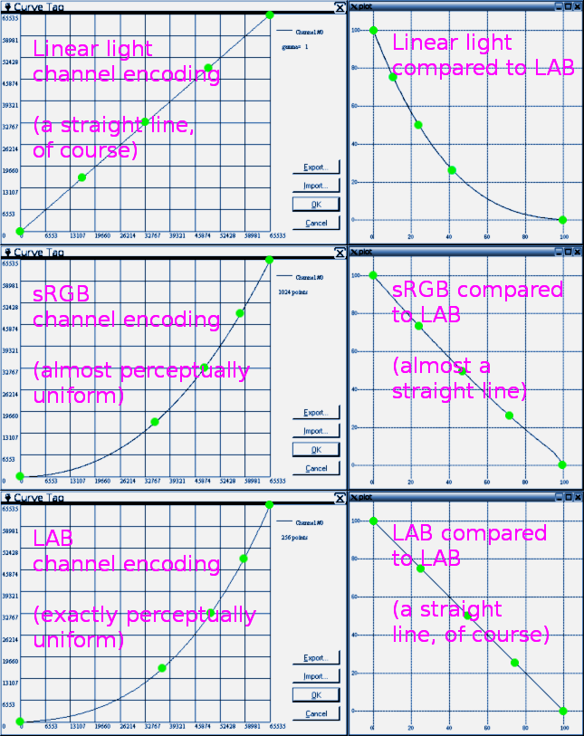
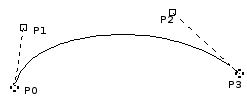
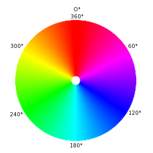
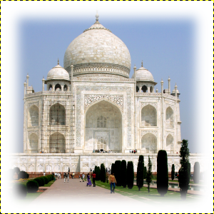

- Alfa
-
Um valor de alfa indica a transparência de um pixel. Além dos valores de vermelho, verde e azul, um pixel possui um valor de alfa. Quanto menor o valor de alfa de um pixel, mais visíveis serão as cores abaixo deste. Um pixel com um valor de alfa de 0 é completamente transparente. Um pixel com um valor de alfa de 255 é totalmente opaco.
Em alguns formatos de arquivo de imagem você só pode especificar que um pixel é completamente transparente ou totalmente opaco. Já outros formatos de arquivo permitem um nível variável de transparência.
- Anti-aliasing
-
Anti-aliasing is the process of reversing an alias, that is, reducing the jaggies. Anti-aliasing produces smoother curves by adjusting the boundary between the background and the pixel region that is being anti-aliased. Generally, pixel intensities or opacities are changed so that a smoother transition to the background is achieved. With selections, the opacity of the edge of the selection is appropriately reduced.
- Área de transferência
-
A área de transferência é uma área temporária de memória que é utilizada para transferir dados entre aplicativos ou documentos. Ela é usada quando você corta, copia ou cola dados no GIMP.
As formas de implementação de área de transferência são levemente distintas entre diferentes sistemas operacionais. No Linux/X11, o GIMP usa a área de transferência do X11 para textos e a área de transferência interna de imagens do GIMP para transferência de imagens entre documentos de imagem. Em outros sistemas operacionais, a área de transferência pode trabalhar de formas diferentes. Consulte a documentação do GIMP a respeito de seu sistema operacional para obter mais informações.
The basic operations provided by the clipboard are “Cut”, “Copy”, and “Paste”. Cut means that the item is removed from the document and copied to the clipboard. Copy leaves the item in the document and copies it to the clipboard. Paste copies the contents of the clipboard to the document. GIMP makes an intelligent decision about what to paste depending upon the target. If the target is a canvas, the Paste operation uses the image clipboard. If the target is a text entry box, the paste operation uses the text clipboard.
- Bitmap
-
Baseado no texto de The Free Online Dictionary of Computing (13 Março de 2001) :
bitmap — A data file or structure which corresponds bit for bit with an image displayed on a screen, probably in the same format as it would be stored in the display's video memory or maybe as a device independent bitmap. A bitmap is characterized by the width and height of the image in pixels and the number of bits per pixel which determines the number of shades of gray or colors it can represent. A bitmap representing a colored image (a “pixmap”) will usually have pixels with between one and eight bits for each of the red, green, and blue components, though other color encodings are also used. The green component sometimes has more bits than the other two to cater for the human eye's greater discrimination in this component.
- BMP
-
BMP é um formato de arquivo de imagem sem compressão projetado pela Microsoft e usado principalmente no Windows. As cores são tipicamente representadas por 1, 4 ou 8 bits, apesar do formato poder suportar mais. Em decorrência de não possuir compressão e dos arquivos serem pesados, este formato não é muito adequado para ser usado na internet.
- Camada
-
Você pode pensar em camadas como sendo uma pilha de lâminas que são mais ou menos transparentes. Cada camada representa um aspecto da imagem e a imagem é a soma de todos estes aspectos. A camada na parte inferior da pilha é a camada de fundo. As camadas acima da mesma, são os componentes que aparecem em primeiro plano.
You can view and manage the layers of the image through the Layers Dialog.
- Canal
-
Um canal refere-se a um certo componente de uma imagem. Por exemplo, os componentes de uma imagem RGB são as três cores primárias: vermelho, verde, azul e, algumas vezes, a transparência (alfa).
Cada canal é uma imagem em tons de cinza do tamanho exato da imagem e, consequentemente, é constituído pelo mesmo número de pixels. Cada pixel desta imagem em tons de cinza pode ser considerado como um recipiente que pode ser preenchido com um valor que varia de 0 a 255 (ou de 0,0 a 1,0). O significado exato deste valor depende do tipo de canal, como exemplo, no modelo de cores RGB, o valor do canal R representa a quantidade de vermelho que é acrescentada à cor de diferentes pixels; no canal de seleção o valor denota quão fortemente os pixels estão selecionados; e no canal alfa os valores representam a opacidade dos pixels correspondentes. Veja também Canais.
- Canal alfa
-
Um canal alfa de uma camada é uma imagem em tons de cinza do mesmo tamanho que a camada que representa tal transparência. Para cada pixel, o nível de cinza (um valor entre 0 e 255) representa o valor Alfa dos pixels. Um canal alfa pode fazer com que algumas áreas da camada apareçam parcialmente transparentes. Esta é razão pela qual a camada de plano de fundo não possui nenhum canal alfa por padrão.
The image alpha channel, which is displayed in the Channels dialog, can be considered as the alpha channel of the final layer when all layers have been merged.
Veja também Exemplo de canal Alfa.
- Channel encoding
-
Channel encoding refers to how fast the intensity (more technically correct for grayscale and RGB images, the relative Luminance) of a channel in a digital image progresses from dark to light as the channel values progress from 0.0 to 1.0 floating point (0 to 255 for 8-bit integer, 0 to 65535 for 16-bit integer).
Other ways of referring to "channel encoding" include "companding curve", "gamma" (which is technically not correct unless the channel encoding is an actual gamma curve), "tone reproduction curve" ("TRC" for short), and "tone response curve" (also "TRC" for short).
The linear light channel encoding reflects the way lightwaves combine there in the real world. The linear light channel encoding is also referred to as "gamma=1.0", "linear gamma" or simply "linear".
Perceptually uniform channel encodings reflects the way our eyes respond to changes in luminance.
In ICC profile color managed workflows, the following channel encodings are commonly used:
-
The LAB companding curve, which is exactly perceptually uniform.
-
The linear light channel encoding, which of course is exactly linear.
-
The sRGB channel encoding and the "gamma=2.2" channel encoding, which are both approximately perceptually uniform and approximately equal to each other.
-
The "gamma=1.8" channel encoding, which is neither linear nor approximately perceptually uniform, though it's closer to being perceptually uniform than it is to being linear.

The Linear light, sRGB, and LAB channel encodings compared.
Looking at the above image:
-
The Linear light channel encoding (top row) represents how lightwaves combine out there in the real world.
-
The sRGB channel (non-linear) encoding (middle row) is almost perceptually uniform.
-
The LAB channel encoding (bottom row) is exactly perceptually uniform, which means it represents how our eyes respond to changes in luminance.
Two different channel encodings are used internally in GIMP for various editing operations, these being "Linear light" and "Non-linear" (previously known as Perceptual gamma (sRGB)).
The companding-curves-compared.png shown above is a slightly modified version of an image from Completely Painless Programmer's Guide to XYZ, RGB, ICC, xyY, and TRCs , which is licensed as Creative Commons Attribution-ShareAlike 3.0 Unported License.
-
- CMY, CMYK
-
CMYK é um modelo de cor que possui componentes para ciano, magenta, amarelo e preto. Ele é um modelo de cor subtrativa, e este fato é importante quando uma imagem é impressa. O mesmo é complementar ao modelo de cor RGB.
Os valores das cores individuais variam entre 0% e 100%, sendo que 0% corresponde a uma cor que não será impressa e 100% corresponde a uma área de cor completamente saturada na impressão. As cores são formadas ao misturar as três cores básicas.
O último destes valores, K (Preto), não contribui para à cor em si, mas serve apenas para escurecer as outras cores. A letra K é usada para a cor Preto a fim de evitar confusão, já que B geralmente significa azul no idioma inglês.
Atualmente o GIMP não suporta o modelo CMYK. (Um plug-in experimental que oferece suporte rudimentar ao CMYK pode ser encontrado em [PLUGIN-SEPARATE]).
This is the mode used in printing. These are the colors in the ink cartridges in your printer. It is the mode used in painting and in all the objects around us, where light is reflected, not emitted. Objects absorb part of the light waves and we see only the reflected part. Note that the cones in our eyes see this reflected light in RGB mode. An object appears Red because Green and Blue have been absorbed. Since the combination of Green and Blue is Cyan, Cyan is absorbed when you add Red. Conversely, if you add Cyan, its complementary color, Red, is absorbed. This system is subtractive. If you add Yellow, you decrease Blue, and if you add Magenta, you decrease Green.
Seria lógico pensar que ao misturar as cores ciano, magenta e amarelo, você subtrairia as cores vermelho, verde e azul, e o olho não veria qualquer luz, isto é, cor preta. Mas o problema é mais complexo. Na verdade, você veria um marrom escuro. Esta é a razão pela qual este modo possui um valor preto e o motivo de sua impressora ter um cartucho de tinta preta. Deste modo é mais barato pois a impressora não precisa misturar as outras três cores para criar uma cor preta imperfeita, ela apenas tem que adicionar a cor preta.
- Component
-
A component is the value for a property of a pixel, such as for a single color channel.
- Cor
-
On the one hand, light comes from the sun or other radiant sources, and is refracted by mediums (water, the atmosphere, glass) and diffusely or specularly reflected by surfaces.
On the other hand, color isn't out there in the world in the same tangible way that light is. Rather color is part of how we sense the world around us. Light enters the eyes, is processed by light receptors (cones and rods), and sent via the optic nerves to the brain for further processing and interpretation.
Light varies in wavelengths, which our eyes and brain interpret as varying hues (reds, blues, greens, and so on), and also in intensity (aka "luminance"). So our perception of color is composed of both intensity ("luminance") information and chromaticity information.
The naming of colors carries one out of the narrow realm of color perception, and into the larger realm of cultural and linguistic interpretation and classification of color, and thence into even larger philosophical, aesthetic, theological, and metaphysical considerations.
The above explanation of Color is a slightly modified excerpt from the Completely Painless Programmer's Guide to XYZ, RGB, ICC, xyY, and TRCs , which is licensed as Creative Commons Attribution-ShareAlike 3.0 Unported License.
- Cores indexadas
-
O modo de cores indexadas é um modo de codificação de cores em uma imagem onde é atribuído um número de cor de 0 a 255 (8 bits) para cada pixel da mesma. A cor que corresponde a este número é então colocada em uma tabela (o mapa de cores). Ao mudar uma cor no mapa de cores, todos os pixels que se referem a esta cor especifica são alterados. Apesar de você poder criar imagens no modo de Cores indexadas e também converte-las para este modo, ele não é, rigorosamente falando, um modelo de cores, e sim, uma forma de se armazenar os valores de cor de cada pixel internamente.
Veja também a seção Mapa de cores e o comando Converter a imagem para cores indexadas.
- Curva de Bézier
-
Uma spline é uma curva matematicamente definida e que possui um conjunto de pontos de controle. Uma curva Bézier é uma spline cúbica que possui quatro pontos de controle, onde o primeiros e o último pontos de controle (nós ou âncoras) são as extremidades da curva e os dois pontos de controle internos (alças) determinam a direção da curva nos extremos (a curva passa pelos nós, mas não passa pelas alças).
Fora do sentido matemático, uma spline é uma tira flexível de madeira ou metal usada para desenhar curvas. O uso deste tipo de tira para o desenho de curvas remonta desde à época da construção naval, onde pesos eram suspensos em “splines” para dobrá-las. Os pontos de controle externos de uma curva de Bézier são similares aos pontos onde as tiras são amarradas a estrutura e os pontos de controle internos são referentes ao local onde os pesos são conectados para modificar a curva.
As curvas de Bézier são apenas uma forma de representação matemática de curvas. Elas foram desenvolvidos na década de 1960 por Pierre Bézier, que trabalhou para a Renault.
As curvas de Bézier são usadas no GIMP como partes de componentes de Vetores.

A imagem acima ilustra uma curva de Bézier. Os pontos P0 e P3 são pontos no vetor, que são criados ao clicar com o mouse. Os pontos P1 e P2 são alças, que são criadas automaticamente pelo GIMP quando você estica a linha.
- Display-referred
-
The phrase "display-referred" refers to images that can be displayed (either directly or by means of ICC profile color management) on devices. The displaying device might be a monitor, or an image printed on paper, or some other display technology.
Regardless of the technology, when you display an image on a device, that device has a maximum and minimum brightness. The maximum and minimum brightnesses are referred to as display-referred white and display-referred black.
The above explanation is a slightly modified excerpt from Models for image editing: Display-referred and scene-referred. The modified excerpt was written and quoted by permission of the author, who has licensed the modified excerpt under the Creative Commons Attribution-ShareAlike 3.0 Unported License.
- Display-referred black
-
"Display-referred black" (or for simplicity, "black") means the floating point RGB color (0.0, 0.0, 0.0) and its integer equivalents. This color has the very special significance that there's no such thing as "less bright than black". So in display-referred image editing, all RGB channel values are greater than or equal to 0.0 and no color is less bright than "black", (0.0, 0.0, 0.0).
The above explanation is a slightly modified excerpt from Models for image editing: Display-referred and scene-referred. The modified excerpt was written and quoted by permission of the author, who has licensed the modified excerpt under the Creative Commons Attribution-ShareAlike 3.0 Unported License.
- Display-referred white
-
"Display-referred white" (or for simplicity, "white") means the floating point RGB color (1.0, 1.0, 1.0) and the integer equivalents (255,255,255),(65535,65535,65535), etc, for 8-bit integer, 16-bit integer, etc.
"Display-referred white" has the very special significance that in display-referred editing there's no such thing as "brighter than white". So in display-referred image editing, all RGB channel values are less than or equal to 1.0 and no color is brighter than "white", (1.0, 1.0, 1.0).
The above explanation is a slightly modified excerpt from Models for image editing: Display-referred and scene-referred. The modified excerpt was written and quoted by permission of the author, who has licensed the modified excerpt under the Creative Commons Attribution-ShareAlike 3.0 Unported License.
- Efeito Moiré
-
O efeito moiré (a palavra é francesa) é um padrão indesejado que surge quando um padrão regular de grades ou linhas interfere com outro padrão, em um ângulo diferente, colocado sobre o mesmo. Pode acontecer, por exemplo, ao digitalizar uma imagem com um scanner, se a imagem tiver uma estrutura periódica (por exemplo, uma imagem de meios-tons reticulada, como é impressa em jornais e revistas), quando se filma uma tela de computador ou TV, ao se tirar uma fotografia digital de um padrão periódico, ou mesmo ao se fazer uma arte em silk-screen.
Se você descobrir o problema a tempo, a melhor solução é mover um pouco a imagem original no scanner ou mudar levemente o ângulo da câmera.
If you cannot re-create the image file, GIMP offers some filters which may help you with the problem. For more information, see the Despeckle and NL Filter (Non-Linear) filters.
- Exif
-
Exchangeable image file format (official abbreviation Exif, not EXIF) is a specification for the image file format used by digital cameras. It was created by the Japan Electronic Industry Development Association (JEIDA). The specification uses the existing JPEG, TIFF Rev. 6.0, and RIFF WAVE file formats, with the addition of specific metadata tags.
The latest version of the specification was released in May 2023. The Exif tag structure is taken from that of TIFF files. There is a large overlap between the tags defined in the TIFF, Exif, TIFF/EP and DCF standards [WKPD-EXIF].
- Formato de arquivo
-
Um formato de arquivo ou tipo de arquivo é a forma na qual os dados do computador são armazenados. Uma vez que um arquivo é armazenado por um sistema operacional como uma série linear de bytes, não se pode descrever de forma óbvia muitos tipos de dados reais (como imagens), por isso, têm sido desenvolvidas várias convenções para interpretar as informações de um arquivo como representações de dados complexos. Todas as convenções estabelecidas para um “tipo” específico de arquivo constituem um formato de arquivo.
Alguns formatos de arquivos típicos para salvar imagens são: JPEG, TIFF, PNG e GIF. O melhor formato de arquivo para salvar uma imagem é determinado pelo objetivo de uso da mesma. Por exemplo, se a imagem é destinada a ser usada na internet, o tamanho do arquivo é um fator muito importante e, se a imagem é destinada a ser impressa, são mais significativos a alta-resolução e a qualidade da imagem. Consulte Tipos de formato.
- Formigas marchantes
-
“Formigas marchantes” é um termo que descreve a linha pontilhada que marca os limites de uma seleção. A linha é animada, então parece como se formiguinhas estivessem marchando uma atrás da outra no contorno da seleção.
- Fragmento
-
A Tile is a part of an image which GIMP currently has open. In order to avoid having to store an entire image in memory at the same time, GIMP divides it into smaller pieces. A tile is usually a square of 64×64 pixels, although tiles at the edges of an image may be smaller than that.
Em qualquer dado momento, um fragmento pode estar na memória principal, ou no cache de fragmentos na RAM ou em disco. Fragmentos que estão sendo processados ficam na memória principal, e fragmentos que foram usados recentemente ficam no cache em RAM. Quando o cache em RAM fica cheio, fragmentos que foram usados a mais tempo são escritos no disco. O GIMP pode recuperar esses fragmentos da RAM ou do disco conforme eles forem necessários.
Hoje em dia os mecanismos os computadores tem bem memória muito maior do que a maioria das imagens usadas, e esses mecanismos não são mais tão utilizados - embora sejam transparentes para o usuário. Ao usar o GIMP em inglês, não confunda esses fragmentos com o filtro Mosaico (a palavra usada em inglês é a mesma nos dois casos: “tile”)
- Gama
-
Gama ou correção de gama é uma operação não-linear que é usada para codificar e decodificar luminância ou valores de cores em sistemas de vídeo ou ainda em sistemas de imagem. Ela é usada em muitos tipos de sistemas de imagem para endireitar uma resposta curva de sinal-para-luz ou deintensidade-para-sinal. Por exemplo, a luz emitida por um CRT (monitores de tubo de raio catódico) não é linear em relação à sua tensão de entrada e a tensão elétrica de uma câmera não é linear em relação à intensidade (energia) da luz na cena. A codificação de gama ajuda a mapear os dados para um domínio que é percebido como linear, deste modo o intervalo limitado de sinal (o número limitado de bits em cada sinal RGB) é melhor otimizado para a percepção humana.
O Gama é usado como um expoente (potência) na equação de correção. Já a compressão de gama (onde gama < 1) é usada para codificar luminância linear ou valores RGB em sinais de cores ou valores de arquivo digital, e expansão de gama (onde gama > 1) é o processo de decodificação, e normalmente ocorre quando a função corrente-tensão de um CRT não é linear.
Para vídeos de PC, as imagens são codificadas com um gama de aproximadamente 0,45 e decodificada com um gama de 2,2. Para sistemas Mac, as imagens são normalmente codificadas com um gama de aproximadamente 0,55 e decodificadas com um gama de 1,8. O padrão de espaço de cores sRGB, usado pela maioria das câmeras, computadores e impressoras, não usa uma equação exponencial simples, mas é equivalente a um valor de decodificação de gama próximo a 2,2 em uma grande parte de seu intervalo.
No GIMP, o gama é uma opção usada na guia “pincel” do filtro Gimpressionista e no filtro Chama. Os filtros de exibição também incluem um filtro de Gama. Veja também a ferramenta de níveis, onde você pode usar o controle deslizante central para alterar o valor de gama.
- Gamut (em português: Gama de cores)
-
Na reprodução de cores, incluindo computação gráfica e fotografia, o gamut (em inglês, pronuncia-se /ˈgæmət/) ou gama de cores, é um certo subconjunto completo de cores. O uso mais comum é referente ao subconjunto de cores que podem ser representadas com precisão dada determinada circunstância, tal como dentro de um espaço de cor fornecido ou por um determinado dispositivo de saída. Outro uso, menos frequente, contudo não menos correto, é referente ao conjunto completo de cores localizadas dentro de uma imagem em um dado período de tempo. Neste contexto, digitalizar uma fotografia, converter uma imagem digitalizada para um espaço de cor diferente ou gerar a saída desta para um meio fornecido em determinado dispositivo de saída geralmente acarreta em alteração de gama de cores (gamut), à medida que algumas cores do original são perdidas no processo. [WKPD-GAMUT]
- GIF
-
GIF™ stands for Graphics Interchange Format. It is a file format with good, lossless compression for images with low color depth (up to 256 different colors per image). Since GIF was developed, a new format called Portable Network Graphics (PNG) has been developed, which is better than GIF in all respects, with the exception of animations and some rarely-used features.
O GIF foi inicialmente apresentado em 1987 pela CompuServe. Ele se tornou mais popular em decorrência de sua eficiência na compressão LZW. O tamanho dos arquivos de imagem exigiam, claramente, menos espaço em disco que os formatos gráficos comuns da época, como o PCX ou o MacPaint. Mesmo usando conexões muito lentas (com modems, na época), imagens grandes podiam ser transmitidas em um tempo razoável. Além disso, a política de licenciamento aberto da CompuServe tornou possível a qualquer programador implementar o formato GIF para seus próprios aplicativos, livres de quaisquer encargos, desde que o aviso de direitos autorais (copyright) da CompuServe estivesse anexados a estes.
As cores no GIF são armazenadas em uma tabela de cores, que pode conter até 256 entradas diferentes, escolhidas de um conjunto de 16,7 milhões de valores distintos de cores. Quando o formato de imagem foi apresentado inicialmente, isto não era uma limitação expressiva, tendo em vista que apenas algumas pessoas possuíam um hardware que poderia exibir mais cores do que isso. Para desenhos típicos, ilustrações chapadas (com cores sólidas), fotografias em preto-e-branco e usos semelhantes, 256 cores são suficientes, em geral, mesmo até bem mais tarde. No entanto, para imagens mais complexas, como fotografias coloridas, fica evidente uma enorme perda de qualidade, razão pela qual o formato não é considerado adequado para tais propósitos.
One color entry in the palette can be defined to be transparent. With transparency, the GIF image can look like it is non-rectangular in shape. However, semi-transparency, as in PNG, is not possible. A pixel can only be either entirely visible or completely transparent.
A primeira versão do GIF foi a 87a. Em 1989, a CompuServe publicou uma versão expandida, chamada de 89a. Entre outras coisas, isto tornou possível o salvamento de diversas imagens em um único arquivo GIF, o que é usado principalmente para animações simples. O número da versão pode ser diferenciado a partir dos seis primeiros bytes de um arquivo GIF. Interpretados com símbolos ASCII, eles são “GIF87a” ou “GIF89a”.
- GNU
-
O projeto GNU foi iniciado em 1983 por Richard Stallman com o objetivo de desenvolver um sistema operacional completamente livre. Ele é bem conhecido especialmente por conta da licença pública geral GNU - GNU General Public License (GPL) e pelo GNU/Linux, o nome completo do sistema operacional que costumamos chamar apenas pelo nome de seu núcleo, que é “Linux”.
O nome surgiu a partir das convenções de nomenclatura que estavam em prática no MIT, onde Stallman trabalhava na época. Para os programas que eram simlares a outros programas, eram escolhidos nomes com siglas recursivas. Já que o novo sistema seria baseado no sistema operacional amplamente difundido, o Unix, Stallman olhou para esse tipo de nome e teve a idéia de GNU, que significa “GNU is not Unix” (em tradução literal: GNU não é Unix). A fim de evitar confusões, o nome deveria ser pronunciado com o “G”, e não como “new” (cuja fonética americana soa como "U"). Existiram várias razões para fazer o GNU ser compatível com o Unix. Por um lado, Stallman estava convencido de que a maioria das empresas iriam recusar um sistema operacional completamente novo, se os programas que eles usavam não fossem capazes de serem executados nele. Além disso, a arquitetura do Unix foi feita de forma rápida, fácil e passível de desenvolvimento distribuído, uma vez que o Unix é constituído de vários pequenos programas que podem ser desenvolvidos de forma independente um do outro, na sua maior parte. Ademais, muitas partes de um sistema Unix estavam disponíveis de forma livre para qualquer pessoa e poderiam, portanto, serem diretamente integradas no GNU, como exemplo, o sistema de composição tipográfica, o TeX, ou o sistema de janelas X. As partes faltantes foram escritas de um novo modo, a partir do zero.
O GIMP, Programa de Manipulação de Imagens GNU, em inglês: GNU Image Manipulation Program, é um aplicativo oficial do projeto GNU [WKPD-GNU].
- Guias
-
As guias são linhas que você pode exibir temporariamente em uma imagem, enquanto você está trabalhando nela. Você pode exibir quantas guias desejar, tanto na direção horizontal como na vertical. Estas linhas lhe ajudam a posicionar uma seleção ou uma camada sobre a imagem. Elas não aparecem quando a imagem é impressa, ou exportada.
Para mais informações consulte Seção 1.2, “Guias”.
- High Dynamic Range
-
With display-referred data you have roughly two and half stops of head room above middle gray and maybe six and a half usable stops below middle gray, at which point the data is too densely packed into too few tonal steps to accurately display differences between solid black and "just barely gray". So at best you have 9 stops of dynamic range, compared to the 20 or more stops of dynamic range you might find in some (certainly not all!) real world scenes.
The usual solution to the dynamic range limitations of display-referred data is to allow channel values to be however high as is needed to encode the scene data. This means allowing channel values that are above display-referred white.
Several file formats supported by GIMP can be used to import and export high dynamic range images, including floating point tiffs, OpenEXR, and FITS.
When working with high dynamic range data, the channel encoding does need to be linear to avoid gamma artifacts.
Editing high dynamic range data requires that there isn't any clamping code in editing operations and blend modes. At floating point precision:
-
Many (but not all) GIMP blend modes are unclamped, including Normal, Addition, Subtract, Multiply, Lighten Only, Darken Only, Difference, and the LCH and Luminance blend modes. Blend modes such as Screen, Soft Light, and Overlay are not unclamped as these operations are designed to work with display-referred data.
-
Many (too many to list but certainly not all, as some editing operations are designed to work with display-referred data) GIMP editing operations also are unclamped, including Levels, Exposure, transforms such as scaling and rotating, and various filter operations such as Gaussian blur.
Portions of the above explanation of "high dynamic range" are slightly modified excerpts from the Models for image editing: Display-referred and scene-referred. These excerpts are quoted by permission and the modified excerpts are licensed as Creative Commons Attribution-ShareAlike 3.0 Unported License.
-
- Histograma
-
Em processamento de imagem digital, um histograma é um gráfico que representa a frequência estatística dos valores de cinza ou dos valores de cor em uma imagem. O histograma de uma imagem informa sobre a ocorrência de valores de cinza ou de valores de cor, bem como o intervalo de contraste e o brilho da imagem. Em uma imagem colorida, você pode criar um histograma com informações sobre todas as cores possíveis, ou três histogramas para os canais individuais de cores. Este último faz mais sentido, já que a maioria dos procedimentos são baseados em operações sobre os tons de cinza que representam os valores de cada canal de cor, de forma independente.
- HSL
-
HSL (Hue, Saturation, Lightness) is a color model which translates RGB colors into terms more intuitive to artists.
HSL is closely related to HSV and uses similar terminology; see the HSV section below for more information.
- HSV
-
HSV (Hue, Saturation, Value) is a color model which translates RGB colors into terms more intuitive to artists.
While the RGB model is literally designed to show colors on a screen, it doesn't easily describe how we read them in everyday life: a light green, pale pink, dazzling red, etc. HSV and HSL models allow direct access to these characteristics while also maintaining a quick and easy internal conversion to (and the same overall gamut as) the RGB values used to display the image: notice that when you change a color in HSV or HSL terms, the RGB values also change to match.
HSV and HSL are closely related and use similar terminology; of the two, GIMP primarily uses HSV.
Brief description of the HSV and HSL components:
- Matiz
-
Hue is the color family: red, yellow, green, blue, and so on, which collectively forms a chromatic circle (or “color wheel”). Hue measures a specific location on this circle in degrees, starting with red at 0°, then cycling through each pure RGB primary and secondary color every 60°, before looping back to red again at 360°.
Note that the term “color” sometimes gets used as a generic synonym for Hue.
- Saturação
-
This attribute describes the intensity or vividness of a color on a scale of 0 to 100, with 0 being completely “desaturated” (grayscale) and 100 being fully saturated, or “pure”.
Saturation differs mathematically between the HSV and HSL models. In HSV, lower Saturation may produce tints, tones, or shades of a pure color (depending on its Value); in HSL, lower Saturation produces tones only (with Lightness responsible for producing tints or shades instead).
- Valor
-
In the HSV model, Value is roughly the total amount of light emitted by a color, analogous to the “brightness” controls on a screen, with lower Values yielding less illumination generally. Value is measured from 0 (black) to a maximum of 100, and is mathematically equivalent to the brightest RGB component of a color (when scaled to fit a range of 0-100); it is therefore not uniform across differing Hues or Saturations. A pure RGB blue is considered to have the same Value as pure green, yellow, or white, despite the latter appearing brighter generally.
- Lightness
-
In the HSL model, Lightness (also called Luminosity) also roughly measures the total amount of light emitted by a color, but differs mathematically from Value: it averages the brightest and darkest RGB components of a color (ignoring any third, intermediate component). A pure RGB color is thus measured as a Lightness of 50% (the same as a tone of 50% gray), with higher Lightness producing tints, and lower Lightness producing shades.
A Lightness of 0 always yields black, but (unlike Value) a Lightness of 100% always yields white, independent of any Hue or Saturation.
- Incremental, modo de pintura
-
O modo incremental é um modo de pintura onde cada pincelada é desenhada diretamente sobre a camada ativa. Quando isto é definido, cada contorno adicional do pincel aumenta o efeito do pincel, até a opacidade máxima para o pincel.
Se o modo incremental não for definido, as pinceladas são desenhadas em um buffer de tela, que é então combinada com a camada ativa. O efeito máximo de um pincel é então determinado pela opacidade definida nas opções da ferramenta de pintura, e carimbar repetidamente o mesmo ponto com o pincel não irá aumentar o efeito além deste limite.
As duas imagens acima foram criadas usando um pincel com espaçamento definido como 60%. A imagem à esquerda mostra um desenho não-incremental e a imagem à direita mostra a diferença ao usar a pintura incremental.
O modo incremental é uma opção de ferramenta compartilhada por várias ferramentas de pintura, exceto aquelas que possuem um controle de “taxa”, o que automaticamente implica em um efeito incremental. Você pode definir isto ao marcar a caixa de seleção Incremental na caixa de diálogo de opções de ferramentas para as ferramentas de Pincel, Lápis e Borracha.
- Intenção de renderização
-
Intenções de renderização (rendering intents) são formas de lidar com cores que estejam fora do Gamut (em português: Gama de cores) , presentes no espaço de cores da imagem de origem e que o espaço de cores da imagem destino seja incapaz de reproduzir. Há 4 intenções de renderização definidas pelo ICC (International Color Consortium - Consórcio Internacional de Cores):
- Perceptual
-
Esta intenção de renderização é usada para conteúdo fotográfico: ela redimensiona um gamut de forma que ele possa estar inteiramente contido em outro, mantendo a posição relativa das cores.
- Colorimetria relativa
-
Esta intenção de renderização é usada tipicamente para cores especiais (spot colors). Cores que não estejam fora do gamut ficam inalteradas. Cores fora do gamut são convertidas em cores com a mesma luminosidade, mas com uma saturação diferente, localizadas nos extremos do gamut.
- Saturação
-
Este método é usado tipicamente para gráficos de apresentações. A saturação relativa das cores é geralmente mantida, mas a luminosidade pode ser alterada.
- Colorimetria absoluta
-
Esta intenção de renderização é usada com mais frequência no processo de criação de provas de impressão. Ela preserva o ponto de branco do dispositivo de origem (máquina fotográfica, scanner, monitor) da imagem, e tenta assim reproduzir as cores exatas da cena original. Nem sempre é uma boa ideia, por que as cores exatas de qualquer cena são influenciadas pela iluminação daquela cena - solar, artificial, etc... que não vai ser a mesma para quem olhar a imagem impressa. É uma boa opção para cores de logotipo, impressão em tecido, etc...
- Interpolação
-
Interpolação significa calcular valores intermediários. Procedimentos de interpolação são usados para calcular as cores dos pixels na imagem transformada quando você a amplia (“zoom digital”) ou qualquer outra forma de transformação (rotação, distorção ou colocar em perspectiva) em uma imagem digital. O GIMP oferece três métodos de interpolação, que são diferentes em relação a velocidade e qualidade. Em geral, quanto melhor a qualidade, mais tempo a interpolação tomará (consulte Métodos de interpolação).
O GIMP usa interpolação quando você Redimensiona uma imagem, Redimensiona uma camada e quando você Transforma uma imagem.
- IPTC
-
IPTC is an acronym for International Press Telecommunications Council which developed the Information Interchange Model (IIM) for text, image and other media types metadata. Refer to [IPTC].
- JPEG
-
JPEG é um formato de arquivo que possui suporte a compressão e funciona com todas as profundidades de cores até 8 bits por canal. A compressão da imagem é ajustável, mas cuidado: a qualidade da imagem pode ser drasticamente reduzida se a compressão for muito alta, já que a compressão JPEG apresenta perdas.
Utilize o JPEG para criar gráficos de internet ou se você não deseja que sua imagem ocupe muito espaço. O JPEG é um bom formato para fotografias e para as imagens geradas por computador (CGI). Ele não é muito adequado para:
-
Desenhos de linhas digitais (por exemplo, capturas de tela ou gráficos vetoriais), nos quais há muitos pixels vizinhos, próximos uns dos outros, com os mesmos valores de cores, poucas cores e bordas sólidas,
-
Imagens em preto e branco (apenas preto e branco, um bit por pixel) ou
-
imagens contendo texto.
Outros formatos, como o GIF, PNG ou JBIG, são muito melhores para esses tipos de imagens.
Em geral, as transformações JPEG não são reversíveis. Abrir e depois exportar novamente um arquivo JPEG provoca uma nova compressão, com perdas de qualidade. Aumentar posteriormente o fator de qualidade não trará de volta a informação da imagem que foi perdida.
-
- L*a*b*
-
O espaço de cores Lab (também chamado de espaço de cores L*a*b*) é um modelo de cores desenvolvido no ínicio dos anos 1930 pela Commission Internationale d`Eclairage (CIE) (Comissão Internacional de Iluminação). Ele inclui todas as cores que o olho humano pode perceber — contém tanto as cores do espaço de cores RGB quanto do CMYK, dentre outras. Em Lab, uma cor é indicada por 3 valores: L, a e b. Aqui, o L significa Luminância, o que corresponde ao valor em tons de cinza - e a e b representam o componente de vermelho-para-azul, e o componente de azul-para- amarelo da cor, respectivamente
Em oposição ao RGB ou CMYK, Lab não é dependente dos diversos dispositivos de entrada e de saída. Por essa razão, é usado como formato de troca entre dispositivos. O Lab é também o modelo de cor interna do PostScript Nível II.
- Mapeamento de relevo
-
Mapeamento de relevo é uma técnica usada para exibir objetos 3D extremamente detalhados, sem aumentar a complexidade geométrica dos objetos. Ela é usada especialmente em programas de visualização tridimensional. O truque está na colocação de todas as informações necessárias em uma textura, para a qual o sombreamento será mostrado na superfície do objeto.
O Mapeamento de relevo é apenas uma das formas (muito eficaz) de simular irregularidades de superfície que não estão realmente contidas na geometria do modelo. Em imagens 2D, o efeito pode dar a sensação de que as mesmas possuem uma textura em 3D.
- Máscara de canal
-
A channel mask is a special type of mask which determines the transparency of a selection. See Máscaras for a detailed description.
- Máscaras
-
A máscara é um objeto de desenho (um desenhável) especial associado a imagem: pode existir associado a uma camada, onde ele gerência a transparência da imagem, ou de forma independente, caso em que é visível no diálogo de canais. O que elas tem em comum é que são objetos de desenho em que se pode trabalhar com qualquer ferramenta de pintura, filtros, copiar e colar, e usar outros recursos do GIMP. Para todos os efeitos, elas se comportam como se fossem uma camada de uma imagem com tons de cinza. Elas nem sempre são visíveis na imagem, mesmo enquanto se está pintando nas mesmas.
Existem dois tipos de máscaras:
-
Máscara de camada: Cada camada pode ter sua própria máscara. A máscara da camada representa o canal Alfa da camada, e permite que você gerencia sua transparência. Ao pintar na máscara de camada, você pode tornar partes da camada mais opacas ou transparentes: pintar com preto torna a camada transparente, pintar com branco torna aquela parte opaca, e tons intermediários tornam a camada semi- transparente. Você pode usar todas as ferramentas de pintura e a maioria dos filtros na sua máscara, bem como copiar e colar trechos de imagem na mesma — ela se comporta como se fosse uma camada de uma imagem em tons de cinza. Você pode usar a máscara de camada para efeitos de transição, efeitos de volume, efeitos de combinação com partes de outra imagem, etc... Consulte a seção Máscara de camada para maiores detalhes.
-
Channel Mask, also called Selection Mask: Channel Masks determine the transparency of a selection. By painting on a Channel Mask with white, you remove the mask and increase the selection; with black, you reduce the selection. This procedure lets you create a selection very precisely. You can also save your selections to a Channel Mask with the Save to Channel command. You can retrieve it later by using the “Channel to selection” command from the Channel menu. Channel masks are so important in GIMP that a special type has been implemented: the Quick mask. See the Selection mask section for more details.
-
- Modelo de cor
-
A color model is a way of describing and specifying colors. The term is often used loosely, to refer to both a color system and the color space on which it is based.
A color space is a visualization of the possible range of colors (or gamut) that can be displayed or recognized by an input or output device (scanner, monitor, printer, etc), or defined by a particular color model. Because human vision is structured around three color receptors, the practical application is that (with a few exceptions) most colors can be specified in three components, and each component represented visually as a coordinate axis of a 3-dimensional space (sometimes called a “color cube”). While there are over 30 color models in use, some of the more important examples are:
- Notação HTML
-
Uma tripla hexadecimal é uma forma de codificar uma cor para um computador. Indica-se que são codificados em hexadecimal os números que estão juntos, ou subsequentes, ao símbolo de “#”. Cada cor é especificada por dois dígitos hexadecimais que formam uma tripla (três elementos) de valores hexadecimais na forma “#rrggbb”, onde “rr” representa o vermelho (Red), “gg” representa a cor verde (Green) e “bb” representa azul (Blue).
- Parasita
-
Um parasita é uma porção de dados adicionais que pode ser escrita num arquivo XCF, como parte de uma imagem do GIMP. Um parasita é identificado por um nome, e pode se pensar no mesmo como se fosse uma extensão às demais informações dentro arquivo XCF.
Parasitas de um componente da imagem podem ser criados e lidos por plug-ins do GIMP. Plug-ins também podem definir seus próprios nomes de parasitas, que são ignorados pelos outros plug-ins. Exemplos de parasitas são comentários, as opções de exportar para arquivos do tipo TIFF, JPEG e PNG, o valor de gama com o qual uma imagem foi criada, e dados de EXIF.
- Pass through
-
Normally, the layers inside a layer group are isolated from the rest of the image -- the layer group is essentially a separate sub-image, living inside the bigger image; you can merge the group into a single layer, replace the original group with it, and the result would be the same.
In following examples, the names of the relevant layers in the images specify the layer mode, with the composite mode in parentheses where applicable, and the layer's opacity.

In this example, the group uses Normal mode; note that the green and blue layers don't affect the red layer: the green layer's color isn't added to the red layer's color, and the blue layer only erases the green layer.
Layer groups using Pass through mode are different: the layers inside them “see” the layers below the group, and interact with them according to their layer mode.

In this example, the group uses Pass through mode. Note that the green layer's color is added to the red layer's color, and the blue layer erases both the green and the red layers.
In simple cases, pass-through groups behave as though there is no group involved at all.

The green and blue layers are not inside a group, and the result is the same as in the preceding example.
In these cases, the group is primarily an organizational tool: it allows you to group together several layers, achieving some desired effect, and handle them as a unit.
However, in general, pass-through groups are not equivalent to having no group at all. For example, when the group's opacity is less than 100%, pass-through groups still behave as a single unit, applying the opacity to the group as a whole (like a normal group would) rather than to the individual layers, while still letting the group layers interact with the background layers.
Compare these three images, which demonstrate the same compositions as above, with the group (or the individual layers, in the last example) having an opacity of 50%. When using pass-through groups to group together several layers achieving a collective effect, the group's opacity essentially lets you control the “strength” of the effect, which can't be achieved using either normal groups, or individual layers.
- PDB
-
All of the functions which GIMP and its plug-ins make available are registered in the Procedure Database (PDB). Developers can look up useful programming information about these functions in the PDB by using the Procedure Browser.
-
PDF (Portable Document Format — Formato de Documentos Portáteis) é um formato de arquivo que foi desenvolvido pela Adobe para reparar algumas deficiências do formato PostScript. Sobretudo, arquivos em PDF tendem a ser muito menores do que arquivos equivalentes em PostScript. O GIMP depende de bibliotecas externas para suportar o formato PDF, que podem ser ou as disponibilizadas com o projeto Ghostscript, que são as mesmas necessárias para suportar a importação de arquivos no formato PostScript, ou a biblioteca mais moderna “Poppler”, dependendo das opções durante a compilação.
- Pixel
-
Um pixel é um único ponto, ou um “elemento da imagem” (“picture element”, em inglês, da contração dessa expressão vem a palavra pixel). Uma imagem retangular pode ser composta de milhões de pixels (daí vem o termo “Megapixel” usado em fotografia digital), cada um representando a cor da imagem em uma localização específica. A cor de um pixel tipicamente é o resultado dos valores guardados em vários Canais, tais como Vermelho, Verde e Azul, que são os componentes de cor, e algumas vezes o canal Alfa (transparência).
- Plug-in
-
Plug-ins are external programs that run under the control of the main GIMP application and provide specific functions on-demand. See Seção 1, “Plug-Ins” for further information.
- PNG
-
PNG é o acrônimo para “Gráficos Portáteis para a Rede” (em inglês, Portable Network Graphics). È o formato preferido para criar ícones, logotipos, texturas e outros elementos para páginas Web. Esse formato oferece muitas vantagens e algumas desvantagens: não é um formato com perda de qualidade, como acontece com o JPEG, por outro lado, em geral cria imagens mais pesadas. No entanto, devido ao fato de que não tem perdas, você pode importar um arquivo PNG e exportar de volta, depois de fazer operações, quantas vezes quiser sem perda de informação (é o formato usado para as imagens deste Manual). Ele suporta 8 bits de cor por canal (milhões de cores), o que não acontece com o formato GIF, por exemplo, ou um formato indexado (máximo de 256 cores, mas usando um único byte por pixel, o que gera um arquivo bem menor), e até 256 níveis de transparência (o formato GIF suporta somente dois níveis de transparência, e o JPEG não suporta transparência nenhuma). A especificação do formato permite até 16 bits de cor por canal, mas o GIMP até a versão 2.8 só trabalha com 8.
- PostScript
-
Criado pela Adobe, PostScript é uma linguagem de descrição de páginas usada principalmente por impressoras e outros dispositivos de saída. Também é uma excelente forma de se distribuir documentos de texto já formatados (veja PDF). O GIMP pode exportar mas não pode importar documentos em PostScript diretamente — ele depende da instalação de um poderoso software livre chamado Ghostscript.
O grande poder do PostScript está em sua habilidade de representar gráficos vetoriais — linhas, curvas, textos, vetores, etc... — de uma forma independente de resolução. Na verdade, trata-se de uma linguagem de programação completa, que pode ser interpretada diretamente no dispositivo de impressão: um arquivo de PosScript é um programa de computador que desenha uma imagem. No entanto o PostScript não é um formato muito eficiente para representar imagens do tipo raster, baseadas em pixels, como as que o GIMP utiliza. Por essa razão, não é um bom formato para ser usado para exportar imagens do GIMP para uso posterior por qualquer programa gráfico.
- Profundidade de cor
-
A profundidade de cor é simplesmente o número de bits usados para representar uma cor (bits por pixel: bpp). Existem 3 canais para cada pixel (para vermelho, verde e azul). O GIMP até a versão 2.8 possui suporte a 8 bits por canal, conhecido como cor de oito-bits. Portanto, a profundidade de cor do GIMP é de 8 * 3 = 24, que permite que 256 * 256 * 256 = 16.777.216 cores possíveis (8 bits permitem 256 cores).
- PSD
-
PSD is Adobe Photoshop's native file format, and it is therefore comparable to XCF in complexity. GIMP's ability to handle PSD files is sophisticated but not perfect: some features of PSD files are not loaded or may look slightly different. Although there is an online specification, it does not cover all details, which makes it difficult to support all features of PSD files.
- Quantização
-
Quantização é o processo de redução da cor de um pixel em um de uma série de valores fixos, combinando a cor para a cor mais próxima no mapa de cores. Valores de pixels efetivos podem ter muito mais precisão do que os níveis discretos que podem ser apresentados em uma tela digital. Se a capacidade da telade exibição, em profundidade de cor, for muito pequena, então mudanças bruscas de cores (falsos contornos, ou faixas) podem aparecer onde a intensidade da cor muda de um nível para outro. Isto é especialmente visível em imagens indexadas, que têm 256 ou menos cores discretas. Note que hoje em dia, 2014, não é comum o uso de monitores configurados com menos que 24 bits de cor por pixel, então o efeito da quantização só pode ser percebido ao se converter explicitamente uma imagem para o modo de cor Indexado. No tempo das primeiras versões do GIMP, era comum PCs terem placas de vídeo que suportavam no máximo 8 bits de cor por pixel.
One way to reduce quantization effects is to use Dithering. The operations in GIMP which perform dithering are the Gradient tool (if you have enabled the dithering option) and the Convert to Indexed command. However, they only work on RGB images and not on Indexed images.
- Reticulado
-
Reticulado é uma técnica usada em computação gráfica para criar a ilusão de mais cores ao exibir uma imagem que possui uma baixa profundidade de cor. Em uma imagem reticulada, as cores que faltam são reproduzidas por um certo arranjo de pontos usando as cores disponíveis. O olho humano percebe isto como uma mistura das cores individuais.
The Gradient tool uses dithering. You may also choose to use dithering when you convert an image to Indexed format. If you are working on an image with indexed colors, some tools (such as the pattern fill tool) may also use dithering, if the correct color is not available in the colormap.
The Newsprint filter uses dithering as well. You can use the NL Filter (Non Linear filter) to remove unwanted dithering noise from your image.
Também leve em conta que apesar do GIMP usar, por si só, cores de 24-bit, seu computador pode atualmente não ser capaz de exibir tantas cores assim. Caso isto não seja possível, o software entre o GIMP e o seu sistema também pode efetuar o reticulado de cores ao exibi-las.
Consulte também a entrada de glossário a respeito da Reticulado de Floyd-Steinberg, o qual é usada no GIMP.
- Reticulado de Floyd-Steinberg
-
O reticulado de Floyd-Steinberg é um método de reticulado que foi inicialmente publicado em 1976 por Robert W. Floyd e Louis Steinberg. O processo de reticulado começa no canto superior esquerdo da imagem. Para cada pixel, é escolhida a cor disponível mais próxima na paleta e a diferença entre tal cor e a cor original é computada (calculada) em cada canal RGB. E então frações específicas desta diferenças são dispersas entre vários pixels adjacentes que não foram visitados ainda (abaixo e à direita do pixel original). Devido a ordem do processamento, o procedimento pode ser feito em um única passagem sobre a imagem.
Quando você converte uma imagem para o modo indexado, você pode optar entre duas variantes de retícula de Floyd-Steinberg.
- RGB
-
O RGB é um modelo de cores que tem como componentes o Vermelho (Red), Verde (Green) e Azul (Blue). Essas cores são emitidas por elementos da tela, e não são refletidas, como acontece com tinta. A cor resultante é a combinação dessas três cores R,G,B primárias, com graus variados de luminosidade. Se você olhar bem de perto a tela de sua TV, que tem um tamanho de ponto (dot pitch) menor do que o usado em monitores de computador, é possível ver os elementos vermelho, verde e azul acesos separadamente, com intensidades variadas. O modelo de cor RGB é aditivo.
O GIMP até a versão 2.8 usa oito bits por canal para cada cor primária. Isto significa que há 256 (2 elevado a oitava potência) intensidades (valores) disponíveis, resultando em 256 × 256 × 256 = 16.777.216 cores possíveis.
Não é óbvio por que uma dada combinação de cores primarias produz uma cor em particular. Por que, por exemplo, 229R + 205G + 229B (#e5cde5) resulta num tom de cor-de-rosa? Isso depende do olho humano e do cérebro. Não há “cores” com nome na natureza, apenas um espectro de comprimentos de onda de luz. Há três tipos de cones (células receptoras de cores que distinguem as cores) ma retina. O mesmo comprimento de onda agindo em cada um desses tipos estimula-os de forma diferente,e a mente aprendeu, depois de milhões de anos de evolução, a reconhecer uma cor a partir dessas diferenças.
É fácil perceber que nenhuma luz (0R + 0G + 0B) produz escuridão total: preto, e que intensidade total de luz (255R+255G+255B) produz branco. Intensidade igual em todos os canais vai produzir sempre um tom de cinza. Esse é o motivo de haver somente 256 tons de cinza no GIMP até a versão 2.8.
Misturar duas cores Primárias no modo RGB cria uma cor Secundária, que são todas equivalentes às cores do modelo CMY (Ciano, Magenta e Amarelo). Assim, misturar Vermelho e Verde resulta em Amarelo, Verde e Azul resultam em Ciano e Azul e Vermelho resultam em Magenta. Não confunda cores secundárias com cores Complementares que são o oposto direto de uma cor no círculo cromático.
Figura 1172. Círculo de cores

Misturando uma cor primária com a sua cor complementar dá cinza (uma cor neutra).
É importante saber o que acontece quando você está lidando com cores no GIMP. A regra mais importante a se lembrar é que decrementar a intensidade de uma cor primaria resulta em aumentar a intensidade de sua cor complementar (e vice-versa). Isso acontece por que quando você diminui o valor de um canal, do Verde, por exemplo, automaticamente você aumenta a importância relativa das outras duas, nesse caso, Vermelho e Azul. A combinação desses dois canais resulta na cor Magenta, que é a cor complementar ao Verde.
A ferramenta de Selecionar cores permite que você descubra os valores RGB de um pixel e a tripla RGB em hexadecimal dessa cor.
- Sample Merged
-
“Usar amostra combinada” ou “amostra da média” é uma opção que você pode definir ao usar a ferramenta de Preenchimento, a ferramenta de Selecionar cores, ou várias das ferramentas de seleção. É útil quando você está trabalhando numa imagem com várias camadas,e a cor visível resultante não está na camada ativa, podendo ser resultado da camada ativa ser transparente ou translúcida ou ter um modo de combinação diferente do “Normal”. Quando você liga a opção de usar amostra combinada, o valor considerado para a operação é o valor composto de todas as camadas visíveis: ou seja, a cor que é exibida na imagem. Caso contrário, somente a cor da camada ativa, independente de seu modo de combinação, é levada em conta.
See also the Clone Tool for using Sample Merged in non-destructive image editing.
- Saturação
-
Este termo refere-se a pureza da cor. Imagine que você adiciona pigmento em uma tinta branca. A saturação varia de 0 (branco, totalmente atenuada, totalmente diluída) a 100 (cor pura).
- Scene-referred
-
When speaking of images captured by a camera, scene-referred means that the intensities in the image RGB channels are proportional to the intensities in the scene that was photographed.
"Scene-referred" is not the same as high dynamic range, as the camera might have been aimed at a low dynamic range scene such as a foggy early morning view. However, adding a light source to the captured frame (eg the moon breaking through the clouds or a street lamp) will turn even a foggy morning into a high dynamic range scene.
As lightwaves do combine linearly, by definition a scene-referred image (whether real or imaginary) must be encoded linearly to preserve the scene-referred nature of the data.
- Seleção Flutuante
-
Uma seleção flutuante (às vezes chamada de uma “camada flutuante”) é um tipo de camada temporária que é funcionalmente similar a uma camada normal, exceto pelo fato da seleção flutuante precisar ser ancorada antes que você continue a trabalhar em qualquer outra camadas da imagem.
Floating selections are described in Seção 4.5, “Flutuar”.
In early versions of GIMP, floating selections were used for performing operations on a limited part of an image. You can do that more easily now with layers, but you can still use this way of working with images.
- Suavização (Enevoar)
-
O processo de suavização (enevoar) efetua uma transição suave entre uma região e seu plano de fundo ao mesclar suavemente as bordas da região.

No GIMP, você pode enevoar as bordas de uma seleção. Os pincéis também pode ter bordas enevoadas.
- Super-amostragem
-
Supersampling is a more sophisticated anti-aliasing technique, that is, a method of reducing jagged and stair-stepped edges along a slanted or curved line. Samples are taken at several locations within each pixel, not just at the center, and an average color is calculated. This is done by rendering the image at a much higher resolution than the one being displayed and then shrinking it to the desired size, using the extra pixels for calculation. The result is a smoother transition from one line of pixels to another along the edges of objects.
A qualidade do resultado depende do número de amostras. A sobreamostragem é feita, com frequência, em tamanhos variando de 2X a 16x o tamanho original. Ela aumenta muito o tempo necessário para desenhar a imagem, e também a quantidade de espaço usada na memória.
Uma forma de reduzir a memória e o tempo necessários é usar a sobreamostragem adaptativa. Esse método tira vantagem de que relativamente poucos pixels estão de fato na borda de um objeto, e então somente aqueles pixels tem que ser sobreamostrados. No primeiro passo, somente algumas amostras são usadas dentro do espaço de um pixel. Se aquelas cores forem muito similares umas as outras, só elas serão usadas para calcular a cor final. Caso contrário, são usadas mais amostras. Isso significa que um maior número de amostras só é usado onde for necessário, o que melhora o desempenho.
- SVG
-
SVG é a sigla de Scalable Vector Graphics (Gráficos Vetoriais Redimensionáveis). É um formato para gráficos vetoriais em 2D, tanto estáticos quanto animados. Você pode exportar vetores do GIMP para SVG e você pode importar documentos SVG, criados em um programa de desenhos vetoriais, no GIMP. Imagens raster, como as criadas pelo GIMP, podem ser importadas e incorporadas em arquivos SVG dentro desses outros programas, se for o caso. Consulte [WKPD-SVG] para maiores detalhes.
- TGA
-
TGA (Arquivo de imagem TARGA) é um formato de arquivo que suporta 8,16, 24 ou 32 bits por pixel, e suporta compressão RLE opcional. Foi originalmente desenvolvido pela Truevision company. TGA é a sigla de Truevision Graphics Adapter (Adaptador de Gráficos Truevision) e “TARGA” é a sigla de Truevision Advanced Raster Graphics Adapter ( Adaptador de Gráficos Truevision Avançado). Antes da popularização dos formato PNG, foi um formato bastante utilizado por que era um dos poucos que permitia imagens com mais de 8 bits por pixel .
- TIFF
-
TIFF (Tagged Image File Format) is a file format which was developed primarily for scanned raster graphics for color separation. Six different encoding routines are supported, each with one of three different image modes: black and white, grayscale and color. Uncompressed TIFF images may be 1, 4, 8 or 24 bits per pixel. TIFF images compressed using the LZW algorithm may be 6, 8 or 24 bits per pixel. Besides PostScript format, TIFF is one of the most important formats for preliminary stages of printing. It is a high quality file format, which is perfect for images you want to import to other programs like FrameMaker or CorelDRAW.
- Tons de cinza
-
Tons de cinza é um modo para codificar as cores de uma imagem que contém apenas tons de preto, branco e de cinza.
When you create a new image, you can choose to create it in Grayscale mode (which you can colorize later, by changing it to RGB mode). You can also change an existing image to grayscale by using the Grayscale, Desaturate, Decompose, Channel Mixer, although not all formats will accept these changes. Although you can create images in Grayscale mode and convert images to it, it is not a color model, in the true sense of the word.
Assim como explicado no modo RGB, imagens de 24-bit do GIMP podem ter até 256 níveis de cinza. Se você mudar do modo de “Tons de cinza” para o modo RGB, sua imagem terá uma estrutura RGB com três canais de cor porém, evidentemente, ela ainda será cinza (mas agora você pode adicionar cores a ela).
Os arquivos salvos ou exportados de imagens em Tons de cinza (8-bit) são menores que os arquivos RGB.
- Tubo de imagem (Image Hose)
-
Um “tubo de imagens” (do inglês image hose), é um tipo especial de pincel do GIMP que consiste em várias imagens. Por exemplo, é possível ter um pincel de pegadas, que consiste de duas imagens, uma para a pegada esquerda e a outra para a pegada direita. Enquanto você estiver pintando com este pincel, uma pegada esquerda aparecerá primeiro e depois virá a direita, em seguida, uma esquerda, e assim por diante. Este tipo de pincel é bem poderoso.
As vezes um “tubo de imagens” também é chamado de “mangueira de imagens”, ou de “pincel animado”. Um tubo de imagens é indicado na caixa de diálogo de pincéis por um pequeno triângulo vermelho no canto inferior direito do símbolo do pincel.
Para informações a respeito da criação de um tubo de imagens, consulte Seção 5.2, “Creating animated brushes” e Seção 5.1, “Adicionando novos pincéis”.
- URI
-
Uma URI (Uniform Resource Identifier - Identificador Uniforme de Recursos) é uma cadeia de caracteres que serve para identificar um recurso abstrato ou físico. URIs são uadas para a identificação de recursos na Internet (tais como páginas Web, vários tipos de arquivos, invocar Web Services e para destinatários de e-mail), e também podem apontar recursos no computador local, como arquivos ou serviços especiais (por exemplo, caminhos para impressoras)
- URL
-
URLs (Uniform Resource Locators - Localizador Uniforme de Recursos) são um tipo específico de Identificadores Uniformes de Recursos (URI). URLs identificam um recurso pelo tipo de acesso primário do mesmo (por exemplo, HTTP ou FTP), e a localização do recurso na rede de computadores. O nome do esquema da URL normalmente é derivado do protocolo de rede usado para o mesmo. Exemplos de protocolos de rede usados são http, ftp ou mailto.
Uma vez que URLs são o primeiro tipo de URI e o mais comum, os termos as vezes são usados como sinônimos.
- Valor
-
Esse termo em geral se refere a intensidade de luz, ou a luminosidade de uma cor. Ele varia de 0 (preto) a 100 (brilho total)
- Vetor
-
Um Vetor no GIMP é um conjunto de linhas retas ou curvas. Pode ser usado para formar os limites de uma seleção, ou ser contornado, criando marcas visíveis a imagem. A não ser que um vetor seja contornado, ele não será visível se a imagem for impressa e não será guardado junto com a imagem se a mesma for exportada (fica salvo somente em arquivos do tipo XCF).
See the Paths Concepts and Using Paths sections for basic information on paths, and the Path Tool section for information on how to create and edit paths. You can manage the paths in your image with the Paths Dialog.
- XCF
-
XCF é um formato de arquivo que é especial, por que é o formato de arquivo nativo do GIMP: isso é, ele foi criado especificamente para armazenar todos os dados que são envolvidos em uma imagem do GIMP e, na verdade, evolui junto com o programa. Por conta disso, arquivos XCF são bem complicados internamente, e a muito poucos programas fora o GIMP que podem le-los. Por outro lado, o GIMP considera esse o único formato em que ele de fato “salva” uma imagem — todos os outros formatos de arquivo são considerados uma “exportação”, tendo em vista que nem todos os dados existentes na imagem serão recuperados se a imagem for gravada no disco e lida de volta.
Quando uma imagem é armazenada como um arquivo XCF, o arquivo codifica quase tudo que é possível saber sobre a imagem: os dados de pixel de cada uma das camadas, a seleção atual, os canais adicionais, se houver algum, máscaras de camada, vetores, guias, metadados, configurações de grade. A coisa mais importante que não é salva num arquivo XCF é o histórico do desfazer.
Os dados de pixel num arquivo XCF são representados com uma compressão sem perdas: os blocos de imagem são comprimidos com o algoritmo RLE. Isso significa que não importa quantas vezes você abra e salve novamente uma imagem usando este formato, nem um único pixel ou outra informação da imagem é modificado ou distorcido. Os arquivos XCF podem ficar bem grandes. O GIMP permite que você comprima os arquivos em si, usando os métodos de compressão gzip ou bzip2, que são ambos bastante rápidos, eficientes e livremente disponíveis. Comprimir um arquivo XCF pode, frequentemente, comprimi-lo por um fator de 10 ou mais.
The GIMP developers have made a great effort to keep the XCF file format compatible across versions. If you create a file using GIMP 3.0, it ought to be possible to open the file in GIMP 2.10. However, some of the information in the file may not be usable.
Documentation about XCF format can be found at https://developer.gimp.org/core/standards/xcf/.
- XDG
-
Freedesktop.org (also called XDG) is a project to work on interoperability among desktop environments on Linux and Unix-like operating systems.
Such operating systems usually include software which implements XDG specifications to allow an application to open other applications, such as a web browser, an email client, or software to take screenshots.
- XMP
-
XMP is an acronym for Extensible Metadata Platform. It is a metadata format based on XML used in PDF and photographs. Report to [XMP] for detailed explanations.
- YCbCr
-
YCbCr é um modelo de cores que foi desenvolvido para o padrão de televisão PAL como uma modificação simples do modelo YUV. Nesse meio tempo, ele se tornou o padrão CCIR-601 para gravação de imagens e vídeos. Por exemplo, ele é usado internamente em imagens JPEG e vídeos MPEG, e, portanto, também em DVD's , CDs de vídeo e a maior parte dos vários formatos de arquivo de vídeo. Note que um modelo de cor ainda não é um espaço de cores, uma vez que ele não determina quais cores são de fato equivalentes ao “vermelho”, “verde” e “azul”. Para um espaço de cores, é necessário haver uma referência a um valor de cor absoluto específico.
Há modelos de cor que não expressam uma cor pelas cores aditivas básicas vermelho, verde e azul (RGB), mas por outras propriedades, por exemplo, o modelo de brilho-cor. Aqui, os critérios são o brilho básico das cores (de preto, passando pelo cinza, até o branco), as cores com a maior porção (vermelho, laranja, amarelo, verde, azul, violeta ou outras cores puras entre essas), e a saturação das cores (de intensas até pálidas). Esse modelo de cor é baseado na capacidade do olho de distinguir pequenas diferenças na luminosidade melhor do que diferenças na cor (matiz), e reconhecer essas melhor do que as diferenças na saturação. Isso faz com que texto cinza num fundo branco seja fácil de ler, mas texto azul sobre um fundo vermelho seja bem difícil, mesmo com o mesmo brilho básico. Tais modelos de cor são chamados de modelos brilho-cor.
The YCbCr model is a slight adaptation of such a brightness-color model. An RGB color value is divided into a basic brightness, Y, and two components, Cb and Cr, where Cb is a measurement of the deviation from gray in the blue direction, or if it is less than 0.5, in the direction of yellow. Cr is the corresponding measurement for the difference in the direction of red or turquoise. This representation uses the peculiarity of the eye of being especially sensitive to green light. That is why most of the information about the proportion of green is in the basic brightness, Y, and only the deviations for the red and blue portions need to be represented. The Y values have twice the resolution of the other two values, Cb and Cr, in most practical applications, such as on DVDs.
- YUV
-
YUV is a color model which uses two components to represent the color information, luma (the strength of the light per area) and the chrominance, or proportion of color (chroma), where the chrominance again consists of two components. The development of the YUV color model also goes back to the development of color television (PAL), where ways were sought for transmitting the color information along with the black-and-white signal, in order to achieve backwards compatibility with old black and white televisions without having to increase the available transmission bandwidth. From the YUV color model of the analog television techniques, the YCrCb color model was developed, which is used for most kinds of digital image and video compression. Erroneously, the YUV color model is also often spoken about in those fields, although the YCbCr model is actually used. This often causes confusion.
Para cálculo dos sinais de luma, os dados RGB subjacentes são ajustados primeiramente com o valor de gama do dispositivo de saída, e a partir daí é obtido um sinal denominado R'G'B'. Os três componentes individuais são adicionados com pesos diferentes, para criar a informação de brilho, que também funciona como o sinal VBS (Vídeo Baseband Signal - Sinal de Banda de base do vídeo) para as TVs antigas preto e branco.
Y=R+G+B
No entanto, o cálculo exato é mais complicado, uma vez que alguns aspectos da percepção de cores do olho humano tem que ser levados em conta. Por exemplo, o verde é percebido como sendo mais claro que o vermelho, que por sua vez é percebido como mais claro que o azul. Além disso, em alguns sistemas, a correção de gama da cor básica é feita primeiro.
Os sinais de crominância e também os sinais de diferença de cores contém a informação de cor. Eles são formados pela diferença de azul menos luma ou vermelho menos luma.
U=B-Y
V=R-Y
A partir dos três componentes gerados, Y, U e V, as proporções de cores primárias que compõe a cor de base pode ser calculadas de novo mais tarde:
Y + U = Y + ( B - Y ) = Y - Y + B = B
Y + V = Y + ( R - Y ) = Y - Y + R = R
Y - B - R = ( R + G + B ) - B - R = G
Além disso, devido à estrutura da retina do olho humano, verifica-se que a informação de brilho é percebida com uma resolução mais elevada do que a cor, de modo que muitos formatos que se baseiam no modelo de cor YUV comprimem a crominância durante a transmissão a fim de economizar largura de banda.